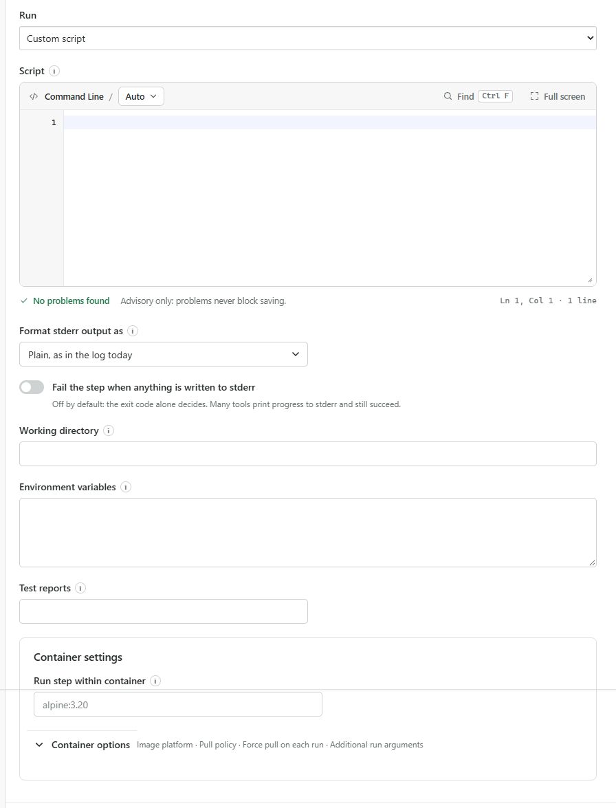

Command Line
Runs a script you type, or one program you name. It is a shell script on Linux and macOS agents and a batch file on Windows agents.
When to use it
Use Command Line for most small jobs: copy files, call a build tool, print a version. Choose Custom script when you want several commands. Choose Executable with parameters to start one program directly, with no shell reading the parameters, which is safer for values from outside.
How to set it up
- Open the build configuration and click Settings › Build Steps.
- Click Add build step. Type
Command Linein Filter step types if you like, then click the Command Line tile (group Command line and scripts). - Type a Step name, for example
Compile shaders. - Fill in the fields described below.
- Optional: set Execute step, Conditions and Retry on failure. See The steps list and the step editor.
- Click Save.

Every field
| Field | What it does | Default | Example |
|---|---|---|---|
| Run | Custom script or Executable with parameters. | Custom script | Executable with parameters |
| Script | The script text, in a code editor. %name% is replaced with that build parameter when the step runs. Type % to pick one. Secret parameters are listed by name only. See The script editor. | Empty (required) | Build\copy-content.bat lines |
| Command executable | The program to start, with its path if it is not on the agent's PATH. It is started directly, without a shell, so nothing in the parameters is read as a command. | Empty (required) | C:\Tools\p4\p4.exe |
| Command parameters | Split on spaces and line breaks into separate parameters. Put double quotes around a parameter that holds spaces: /c "echo hi there". A backslash is kept as it is. Other processes on the agent can see parameters, so pass a secret through the environment. | Empty | sync //depot/Game/... |
| Format stderr output as | Show stderr lines in orange or red in the log. | Plain, as in the log today | Warning |
| Fail the step when anything is written to stderr | Off: the exit code alone decides. | Off | On |
| Working directory, Environment variables, Test reports, Run step within container | The same in every runner. See Fields every runner has. |
A worked example
A Windows agent compiles a shader pack and prints the version. Step name Compile shaders, Run = Custom script:
@echo off
echo Building shaders for %CONFIG% (build %build.number%)
Build\ShaderCompiler.exe -platform Win64 -config %CONFIG% -out Saved\Shaders
if errorlevel 1 exit /b 1Here %CONFIG% and %build.number% are build parameters, put into the script text when the step runs.
What you see when it runs
The console block is titled [Step 1/3] Compile shaders (Command Line). The script is saved to a temporary file on the agent and run. A line with $ shows the command. Output follows. A non-zero exit code fails the step: Command Line exited with code 1.
Problems and fixes
| Problem | What to do |
|---|---|
| The Command Line step has no script / has no executable | Fill in the Script or the Command executable. |
| … could not start | The program was not found. Give its full path, or put it on the agent's PATH. |
| This tool is a Windows batch file, which cannot take an argument holding a double quote, %, ! or a line break | Remove those characters from the parameters, or use a script. |
| Parameter X was given a value other than its default by someone who may not configure this build configuration | Use the default value, or ask someone with Configure permission to run it. |
| Parameter X holds a secret and is not written into the script | Read the environment variable of the parameter instead. |
| wrote to standard error, and the step is set to fail when it does | Untick Fail the step when anything is written to stderr, or fix the tool's warnings. |